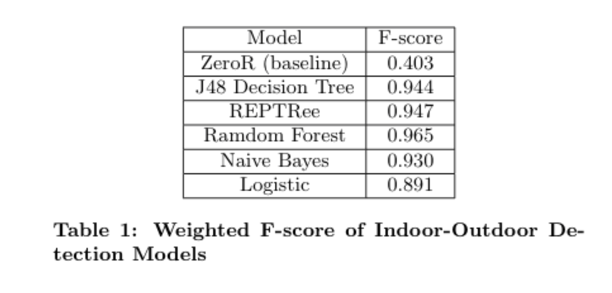
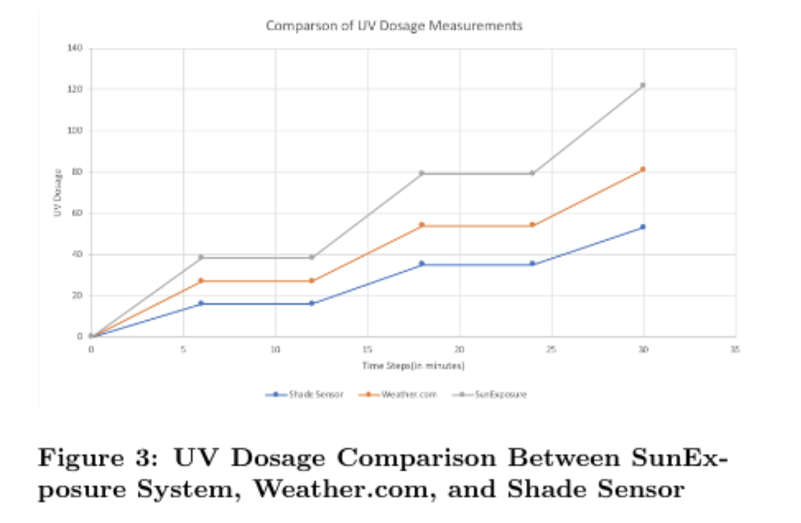
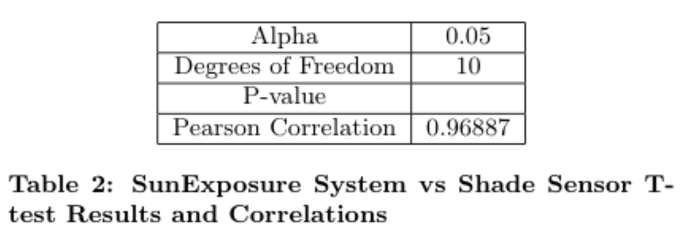

SunExposure
Experiment 1
After data was collected in the CSV, we extract it from the Nexus 5 smartphone for analysis and comparison to the ground truth for indoor vs outdoor detection and to the Shade Sensor during the structured walkthrough scenario. A snippet of the data collected can be found in Appendix B. Using Weka (https://www.cs.waikato.ac.nz/ml/weka/), we perform various methods of classification for indoors vs outdoors. The methods chosen focus on rule and tree based classification method. We choose this focus due to the ability of rule and tree based classifiers to be coded efficiently within an app once trained, and the ability of providing real time(fast) predictions. The results of these models are below in Table 1. For completeness, two non-rule or tree based classifiers were evaluated, and the models are compared to the baseline ZeroR.

As the results show, the decision tree based models were best able to the classify the data, indicative of their classification abilities given separable data. Additionally, we note that all of the learned models performed significantly better than the baseline ZeroR, which classified all of the data points as outdoors. The Random Forrest classifier performed best, though with signficantly higher complexity than the J48 and REPTree. For the REPTree, the parameters used were no-pruning and a max depth of 3, to prevent overfitting on the data and to reduce model complexity. Based on the results, both F-score and model complexity, we choose the REPTree model as the model for the SunExposure app’s indoor-outdoor detection. The decision tree that is the result of REPTree with a max depth of 3 is shown in Figure 2


Figure 3 shows a participants results, showing the UV dosage measurements from the SunExposure System (in gray), the Shade Sensor (in blue), and Weather.com’s estimation of UV for the area (in orange). To create the plot for Weather.com, the UV Index reported was multiplied using the same conversion as for the SunExposure system, and used ground truth for its indoor-outdoor labels. Based

on this graph, there are a few notable points that can be seen. First, the SunExposure App’s UV dosage measurements match those of the Shade Sensor and of ground truth while indoors. This can be seen in the horizontal lines in the graph, which represent times when the UV dosage, an accumulated value, did not increase for either of the three measurement methods. However, the graph also shows that while the user is outdoors, the UV dosage measurements differ considerably between the three methods. There are a few possible explanations for this. First compared to the Weather.com measurements and the Shade Sensor measurements, the SunExposure app overestimates UV dosage. This is due to UV Index measurements that the OpenUV API provide. While this API was chosen for its ability to provide real-time, precise (to the hundredth place) UV Index measurements, the results show that it likely over reports UVI. Due to overestimation, we consider using other APIs, that are likely not real-time or not precise (integer UVI values) in our futurework. Next, compared to the other methods of measurements, the results show that the Shade Sensor under reports UV dosage. During our testing, we observed that the UVI readings on the Shade Sensor app were variable based on angle of the sensor and the shade created by the user. While in theory it is able to capture when the user is not experiencing UV due to shade or overhangs, we found that often the user wearing the sensor created a shadow over the sensor if he or she was not facing the sun. This caused UVI measurements to drop considerably. Additionally, we foundthat if the Shade sensor was not facing directly upwards, the measurements recorded by the Shade sensor also decreased considerably. The results of the t-test support these findings, as the p-value of 0.035 rejects the null hypothesis that the true mean difference between the Shade sensor UV dosage and that of the SunExposure app is 0. We then conclude, as illustrated in the graph above, that the US dosage measurements are different between the two systems. However, as the Pearson Correlation Coefficient shows, the two measurements are highly correlated, showing that both are similar in their ability to not increase when the user is indoors and their increase when the user is outdoors and has UV exposure.